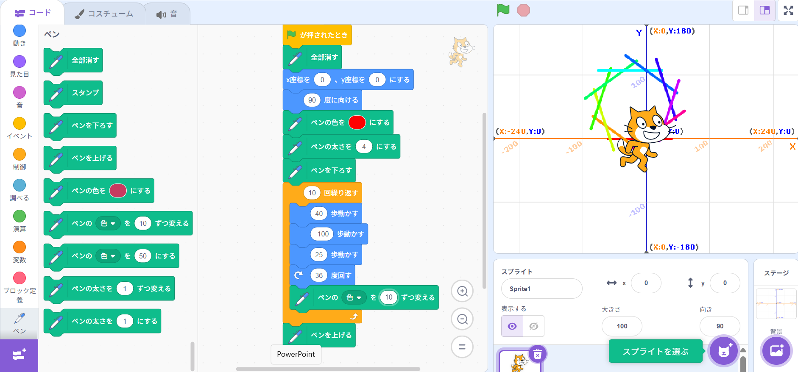
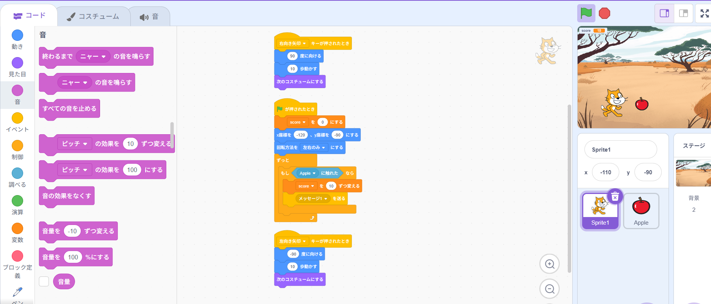

1-1 サイエンスアート

1.内容
scratchでスプライトの移動の方法と移動した軌跡を利用してラインアートを描く方法を学習した.スプライトに向きを指定して移動させその間ペンを下すことでその軌跡を描写してラインアートを描いた.
2.感想
移動距離が大きすぎると枠内に収まらないため正しい図形が表示されず,移動距離が小さすぎると図形が小さくなりすぎるので移動距離の調整が難しかった.また,一本一本の線の色がすべて異なるように設定するのが難しかった.
1-2 ゲーム

1.内容
入力によってスプライトのコスチューム,移動,向きを出力するプログラムを学び,リンゴがランダムに落ちてきて,リンゴとの接触で得点が加算されるゲームを作成した.
2.感想
入力とそれに対応した動きを指定してプログラムするのが難しかった.今回簡単なゲームを作成することで自分のプログラムした内容が形になった実感がわいた.